SYSTEM OVERLOAD
Motion Graphics | Electronic Music Culture | Audio Reactive Design
An exploration of the relationship between rave culture, immersive music experiences, and neurodivergent sensory perception through creative coding, moving image, and print. Using audio-reactive systems and computational design, this project translates sound into dynamic visual outcomes, capturing the intensity and rhythm of club environments.
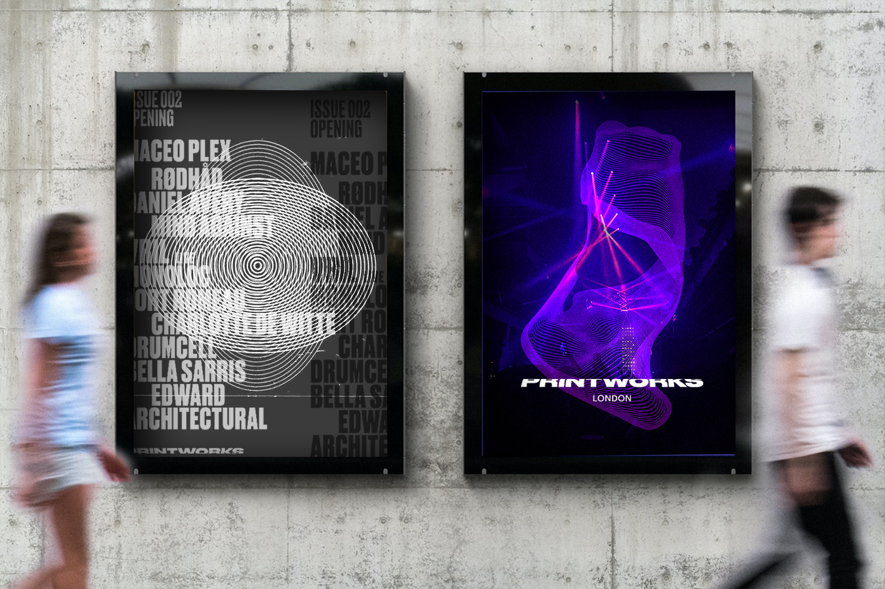
Concept
Inspired by the fast-paced, immersive atmosphere of electronic music events, I investigate how sound can be experienced visually. Through repetition, colour, movement, and layered compositions, I explore how computational design can communicate the energy and sensory complexity of the dancefloor.
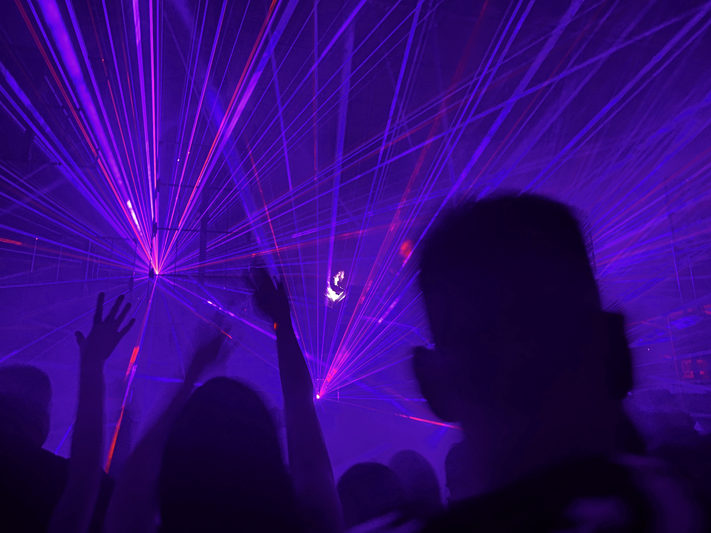
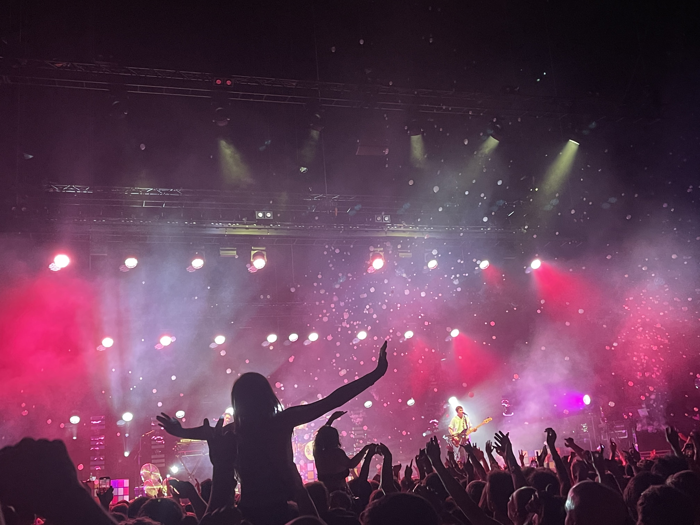
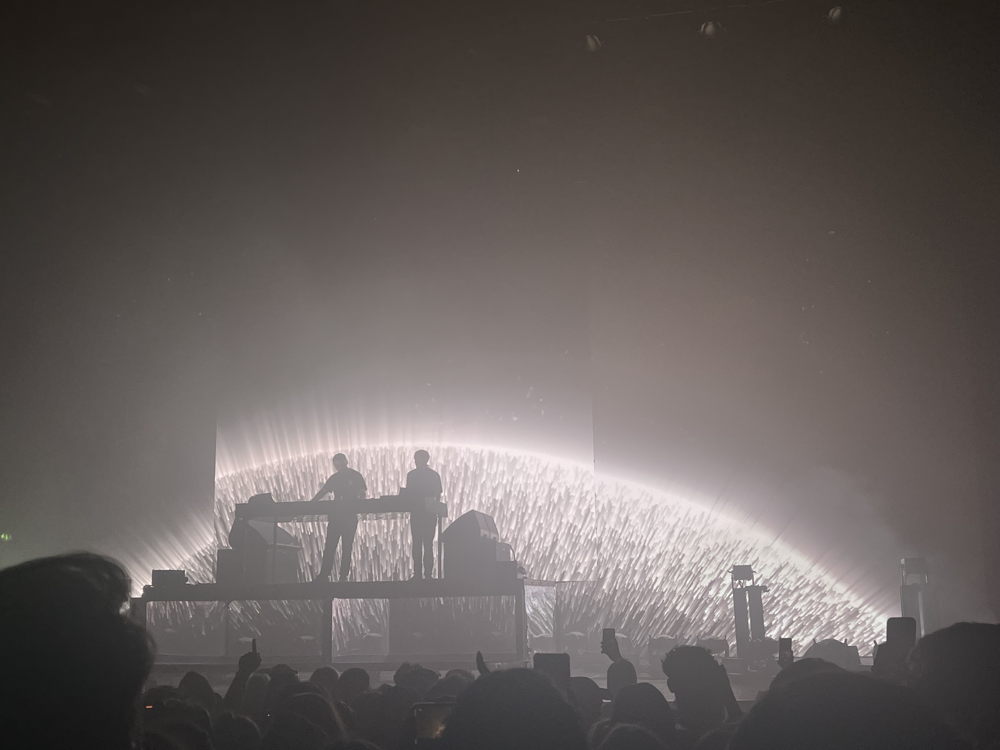
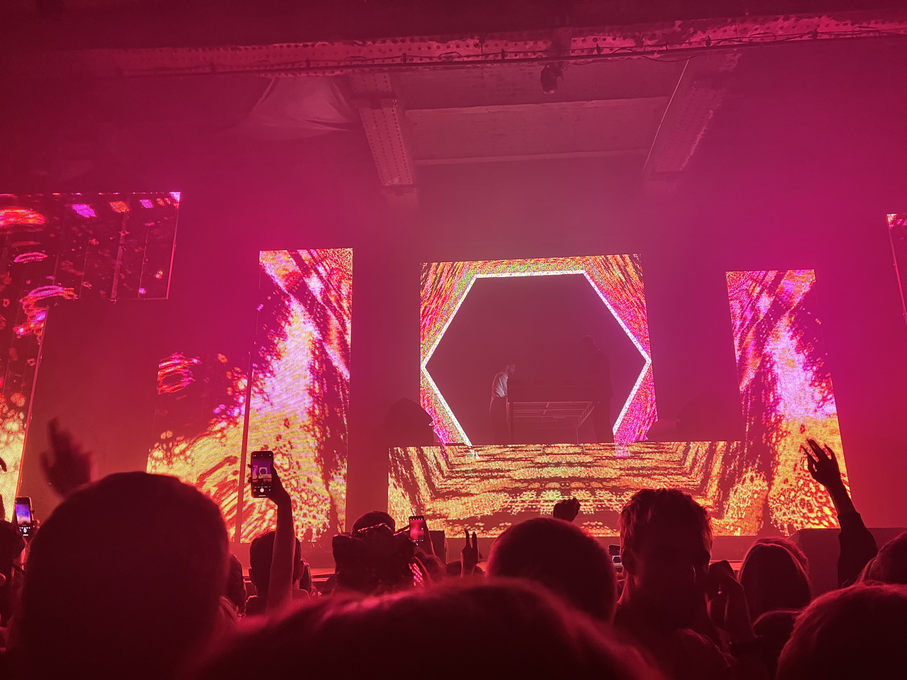
Using p5.js, I developed audio-reactive visuals that responded directly to frequencies, amplitude, and rhythm within electronic music. These generative systems transformed sound into evolving patterns, allowing music to become the driving force behind the project's visual language.
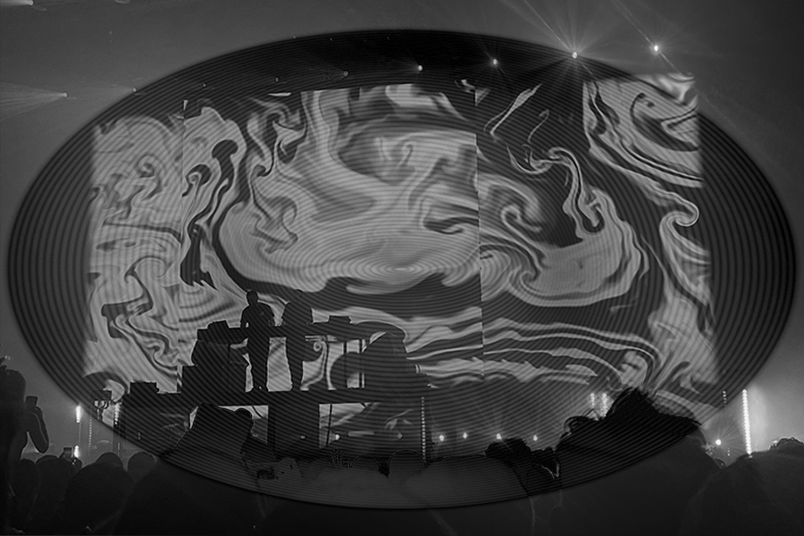
Material Development
Computational outputs were translated into a series of physical experiments through laser engraving, layered printing, and material testing. By combining transparent acrylic, print processes, and layered compositions, I explored how movement and depth could be communicated through static objects.
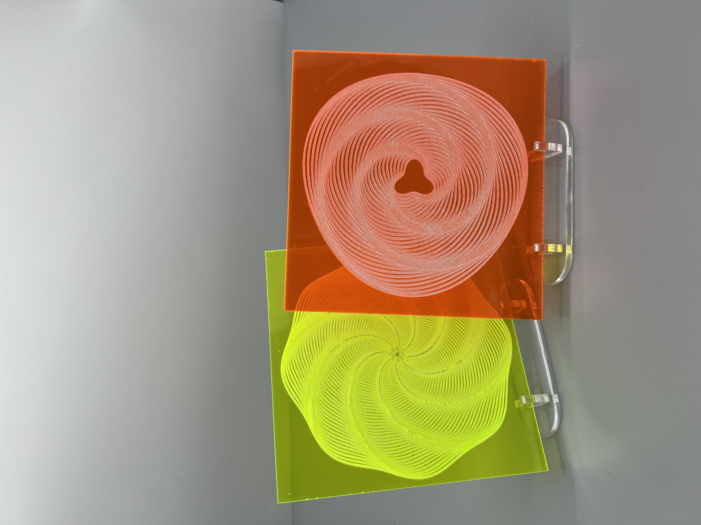
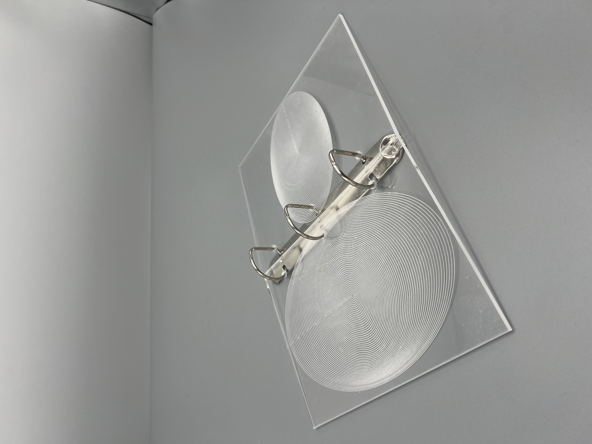
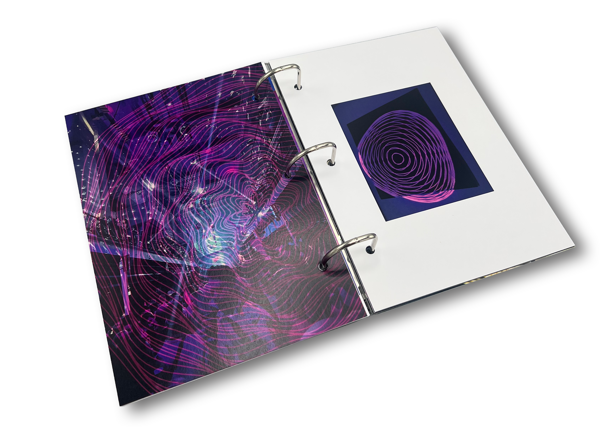
These developments demonstrate how creative coding can bridge digital experiences with contemporary graphic and print design.
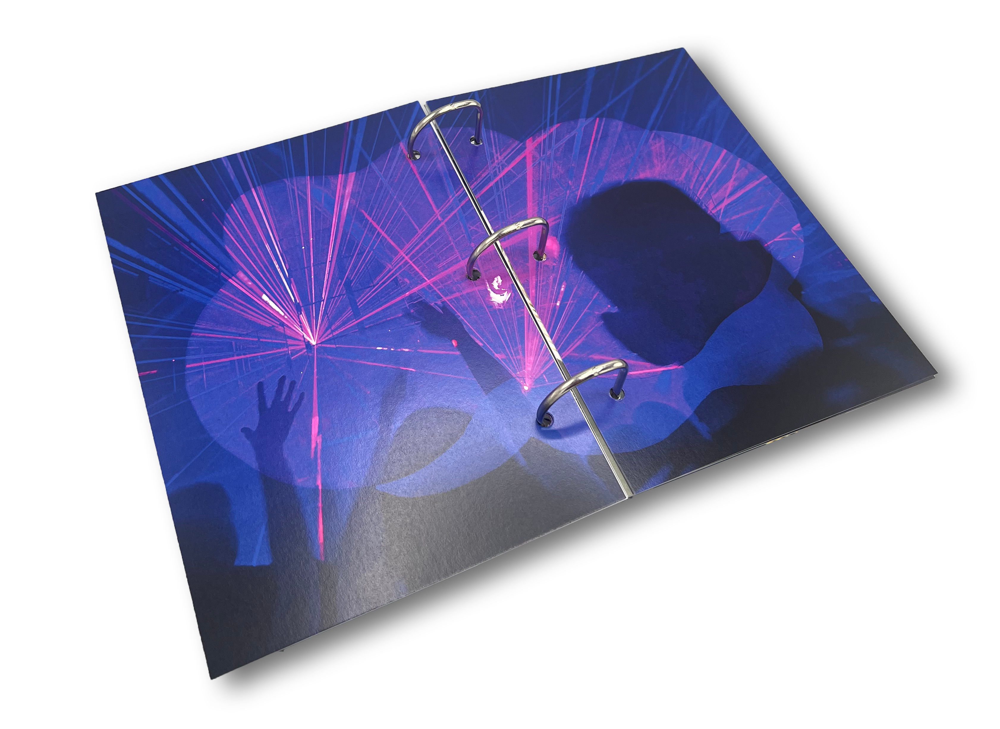
Outcomes
Final outcomes include a laser-engraved acrylic publication, a series of rave-inspired posters and flyers, and a layered CD case that reimagines music packaging through computational design.
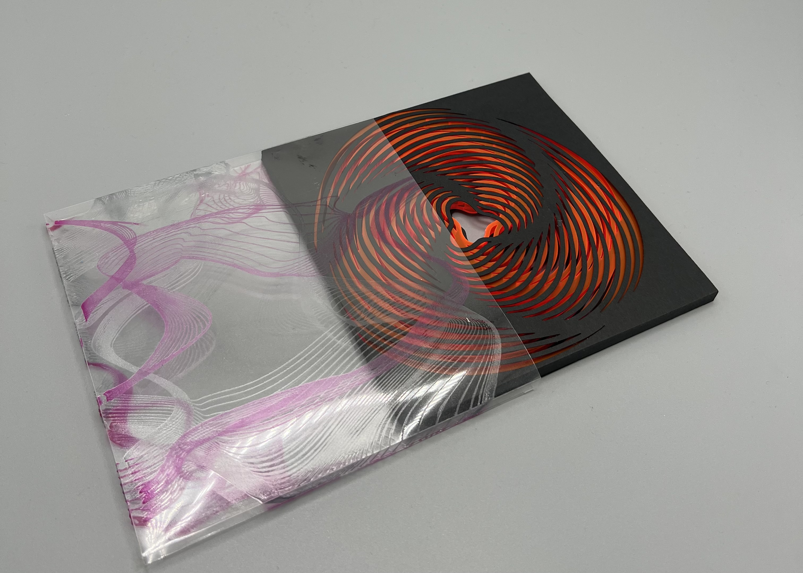
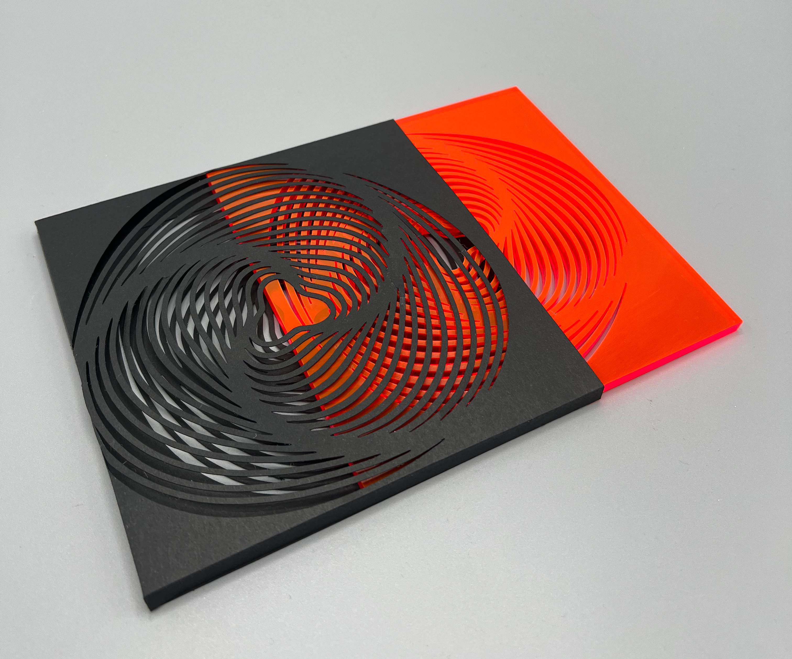
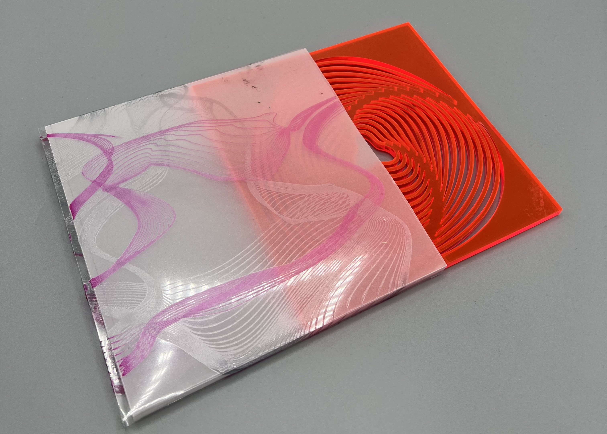